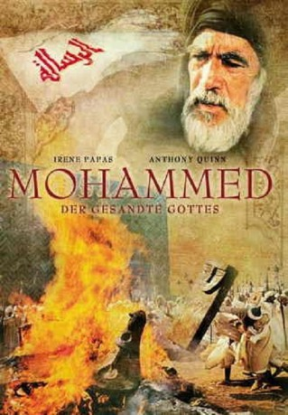
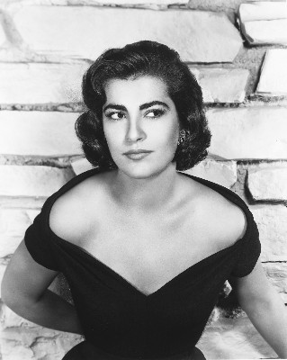
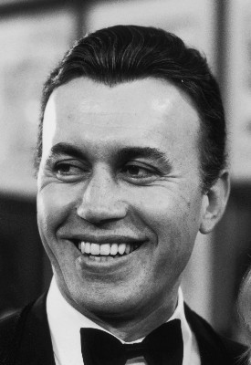
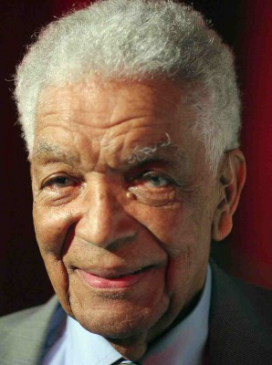
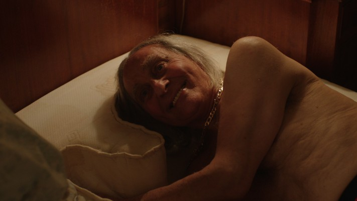
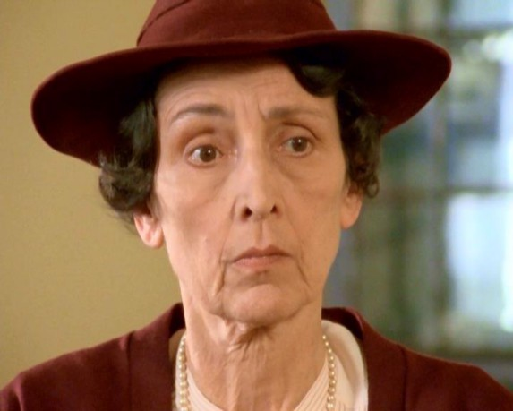
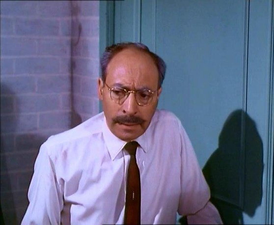

#3590 Mohammed - Der Gesandte Gottes
Alternativ: The Message
Auszeichnungen: für 1 Oscars nominiert
 
 IMDB-Wertung: 8.4 / 10
IMDB-Wertung: 8.4 / 10  Metascore: 0
Metascore: 0 
Man zaehlt das 7. Jahrhundert. Die Stadt Mekka steckt voller Intrigen. Ihre maechtigen Fuehrer befinden sich in einem erbitterten Kampf gegen einen Mann, der den uralten Goetzenglauben und damit die Gewalt der Herrschenden untergraebt: Mohammed. Der 40-jaehrige Prophet verurteilt Unrecht und Sklaverei und verkuendet, es gebe nur einen einzigen Gott. Diese neuen Lehren missfallen den Herrschenden. Sie bekaempfen Mohammed und seine Anhaenger mit allen Mitteln, doch diese sind entschlossen ihre Botschaft weiter zu verbreiten. Aus Respekt vor der muslimischen Tradition ist der Prophet im Film nicht zu sehen und auch nicht zu hoeren, ebenso seine Frauen und die ersten Kalifen. Szenen, bei denen Mohammed in der Naehe ist, werden durch leise Orgelmusik untermalt. Seine Worte werden von Hamza, Zaid, Bilal oder anderen zitiert. In der Schlacht von Badr ist Ali nicht zu sehen, aber die Spitze seines Schwerts Zulfiqar. Bei Mohammeds Ankunft in Medina sieht man seine Kamelstute Qaswa.
Jahr: 1976
Dauer: 178 Minuten
FSK: 12
Land: Libanon Studio: UFA VideoTonspuren: DTS - ,
Untertitel:
Auflösung: 720p (1280x720) Größe: 6963 MB
Genre: Drama, Abenteuer, Krieg, Geschichte, Biographie
Regisseur: Moustapha Akkad
Drehbuch: Joseph Finder
Soundtrack:
Darsteller:
 Anthony Quinn als Hamza
Anthony Quinn als Hamza-  Irene Papas als Hind
-  Michael Ansara als Abu Sofyan
 Michael Forest als Khalid
Michael Forest als Khalid Garrick Hagon als Ammar
Garrick Hagon als Ammar- Damien Thomas als Zaid
 André Morell als Abu-Talib
André Morell als Abu-Talib Robert Brown als Otba
Robert Brown als Otba-  Earl Cameron als Annajashi
- George Camiller als Waleed
-  Nicholas Amer als Suheil
 Richard Johnson als Narrator
Richard Johnson als Narrator Vic Tablian als Hamzu army soldier , uncredited
Vic Tablian als Hamzu army soldier , uncredited- Johnny Sekka als Bilal
 Martin Benson als Abu-Jahal
Martin Benson als Abu-Jahal-  Rosalie Crutchley als Somaya
- Bruno Barnabe als Umaya
- Neville Jason als Jaafar
 John Bennett als Salool
John Bennett als Salool- Donald Burton als Amr
- Ronald Chenery als Mosaab
- Michael Godfrey als Barra
- John Humphry als Ubada
- Ewen Solon als Yasser
- Wolfe Morris als Bu-Lahab
- Ronald Leigh-Hunt als Heraclius
- Leonard Trolley als Silk Merchant
- Gerard Hely als Sinan
- Habib Ageli als Hudayfa
- Peter Madden als Toothless Man
- Hassan Joundi als Kisra
- Abdellah Lamrani als
- Elaine Ives-Cameron als Arwa
- Mohammad Al-Gaddary als Money Lender
- Ahmed Abdelhalim als Uriqat
- Mohamed Basri als Merchant
- David de Keyser als Of minor roles
- Hassan Essakali als
- Salem Gedara als Wahshi
- Laurence Payne als Of one major role
- Robert Rietty als of Major and minor roles
-  Cyril Shaps als Of minor roles
Datei: X:\1976\Mohammed - Der Gesandte Gottes (1976, FSK12, 1280x720).mkv seit 07.05.2016
Festplatte: HD 1971-1979
 Es gibt insgesamt 31 Filme in der Gruppe '1976'
Es gibt insgesamt 31 Filme in der Gruppe '1976'